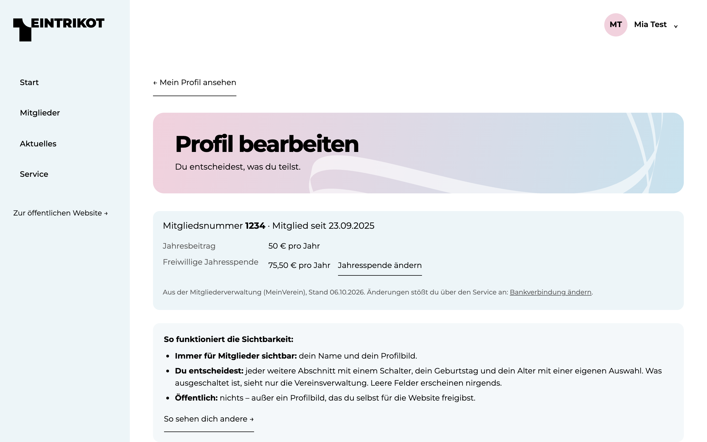
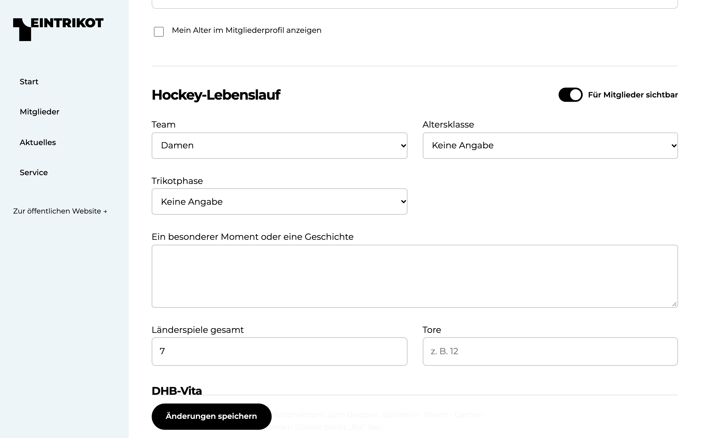
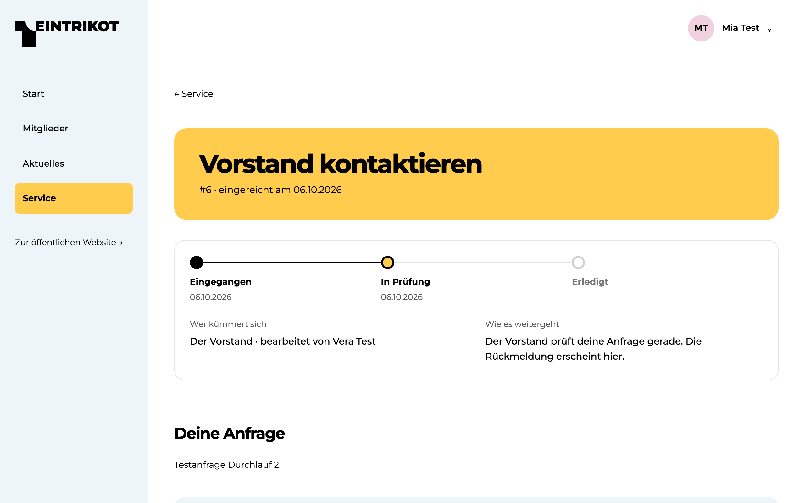

Entwurf zur Designfreigabe · Hilfe-Bereich für MitgliederStand 26.11.2026 · Screenshots aus dem lokalen Testportal, alle Personen erfunden
Konzept
Hilfe, die zeigt statt erklärt.
Ein eigener Hilfe-Bereich für Mitglieder: kurze Anleitungen nach Aufgaben („Ich möchte …“), jede mit echten Screenshots, nummerierten Markierungen und – wo es sich lohnt – einem stummen Video von 20 bis 30 Sekunden. Vorstand und Redaktion bekommen später eine eigene Hilfe.
Aufgaben statt SeitenÜberschriften sind Ziele („Für einen Termin anmelden“), nicht Menüpunkte. So finden Mitglieder die Antwort mit ihren eigenen Worten.
Zeigen, dann erklärenEin Screenshot pro Schritt, rote Nummern darauf, dieselben Nummern im Text. Fährt man über einen Punkt der Liste, leuchtet die Stelle im Bild auf.
Video als AbkürzungWer lieber zuschaut: kurzes Video ohne Ton, mit Untertitel-Leiste und sichtbarem Mauszeiger. Darunter stehen dieselben Schritte zum Nachlesen.
Erkennbar „nicht das Portal“Punktraster wie auf einer Taktiktafel, Portal-Bilder immer in einem Fensterrahmen. Schrift, Farben und Logo bleiben EINTRIKOT.
Hilfe dort, wo man hängtJede Portalseite bekommt einen kleinen „?“-Knopf, der direkt zum passenden Artikel springt (siehe Ansicht 5).
Einfache SpracheDu-Form, kurze Sätze, höchstens fünf Schritte pro Anleitung, keine Fachbegriffe. Datenschutz-Fragen beantwortet ein eigener Kasten „Wer sieht das?“.
Diese Datei zeigt die Gestaltung. Gebaut wird erst nach deiner Freigabe, dann als eigene Seite im Portal (nur für angemeldete Mitglieder), lokal getestet und per Pull Request eingespielt.
Du entscheidest. Name und Profilbild sehen alle Mitglieder, alles andere schaltest du Abschnitt für Abschnitt frei. Öffentlich im Internet steht nichts davon.
⏱ 2 MinutenHandy & Computer
1
Profil bearbeiten öffnen
Klicke oben rechts auf deinen Namen und wähle Profil bearbeiten. Oben siehst du deine Daten aus der Mitgliederverwaltung und die Regeln zur Sichtbarkeit.
eintrikot.de/community-portal · Profil bearbeiten
So sieht es im Portal aus

1Jahresbeitrag und Spende kommen aus der Mitgliederverwaltung. Ändern geht über Jahresspende ändern bzw. den Service.
2Die drei Regeln: immer sichtbar, du entscheidest, öffentlich.
3So sehen dich andere zeigt dein Profil mit den Augen eines anderen Mitglieds.
2
Abschnitt freigeben und speichern
Jeder Abschnitt hat rechts einen Schalter Für Mitglieder sichtbar. Schwarz heißt: sichtbar. Danach unten Änderungen speichern – der Knopf bleibt beim Scrollen immer am unteren Rand.
eintrikot.de/community-portal · Profil bearbeiten
So sieht es im Portal aus

4Schalter an: andere Mitglieder sehen diesen Abschnitt. Aus: nur du und die Vereinsverwaltung.
5Änderungen speichern nicht vergessen. Klappt das Speichern nicht, bleiben deine Eingaben 30 Minuten als Entwurf erhalten.
Gut zu wissen
Leere Felder erscheinen nirgends – auch nicht, wenn der Abschnitt freigegeben ist.
Deinen Geburtstag gibst du extra frei: niemand, Tag und Monat, oder mit Jahr. Das Alter ist eine eigene Wahl.
Die Vereinsverwaltung schaltet nie etwas für dich frei.
1Die vier Bereiche: Start, Mitglieder, Aktuelles, Service. Am Handy unten.
2Schnellsuche nach Mitgliedern direkt von Start.
3Dein Profil: was noch fehlt, mit „Ergänzen“.
4Neueste Vereinsinfo aus dem Verein.
5Nächster Termin – mit Link zu allen Terminen.
6Deine Anfragen und ihr Stand.
Ansicht 6
Markierungen auf goldenen Seiten (Service)
Brandbook: Schwarz, Rot und Gold nie zusammen. Auf den goldenen Service-Seiten werden die Markierungen deshalb schwarz statt rot. Sonst bleibt alles gleich.
eintrikot.de/community-portal · Anfrage
So sieht es im Portal aus

1Stand: eingegangen, in Prüfung, erledigt – mit Datum.
2Wie es weitergeht und wer sich kümmert. Die Rückmeldung erscheint hier, zusätzlich kommt eine E-Mail.
Ansicht 7
Wie Mitglieder zur Hilfe kommen
„?“-Knopf auf jeder Portalseite
Oben rechts neben deinem Namen. Er führt zur passenden Anleitung: auf „Termine“ zu „Für einen Termin anmelden“, im Profil zu „Wer sieht mein Profil?“.
?HilfeMT Mia Test ⌄
Kontomenü und Service
„Hilfe“ als eigener Punkt im Kontomenü und als Kachel im Service unter „Konto“.
Neu im Portal
In der Umstiegsmail und auf der Karte „Deine ersten Schritte“ ein Link „In 2 Minuten erklärt“ zum Rundgang.
Vor der Anmeldung
Die Artikel zu Anmeldung und Passwort sind auch ohne Login erreichbar, ein Link steht auf der Anmeldeseite. Alles andere nur für Mitglieder.
Ansicht 8
Alle geplanten Anleitungen (Mitgliedersicht)
Erste Schritte
Zum ersten Mal anmelden (Link aus der Mail)📷
Das Portal auf einen Blick📷 ▶
„Zeig dich“ und Newsletter: die zwei Fragen zum Start📷
Profil & Sichtbarkeit
Wer sieht mein Profil?📷
Profil bearbeiten und speichern📷 ▶
Profilbild hochladen und zuschneiden📷
Geburtstag und Alter zeigen oder nicht📷
Hockey-Lebenslauf und DHB-Vita📷
LinkedIn, Instagram, Facebook verlinken📷
Profilbild auf der Website (Vorstand, Beirat)📷
Mitglieder finden
Ein Mitglied finden📷 ▶
Filter, A–Z und Sortierung📷
Kontakt aufnehmen📷
Termine & Vereinsinfos
Vereinsinfos lesen📷
Für einen Termin anmelden📷 ▶
Wer ist dabei?📷
Geburtstage unter „Termine“📷
Service & Anfragen
Eine Anfrage stellen und den Stand sehen📷
Adresse, E-Mail oder Telefon ändern📷
Bankverbindung ändern (ohne Kontodaten im Portal)📷
Jahresspende anfragen oder ändern📷
Förderidee einreichen📷
Mich einbringen: Zeit, Wissen, Kontakte📷
Dokumente: Satzung und Protokolle📷
Newsletter-Ausgaben nachlesen📷
Konto & Anmeldung
Passwort vergessen📷
„Angemeldet bleiben“ – wann sinnvoll?📷
Auf allen anderen Geräten abmelden📷
Newsletter an- oder abbestellen📷
Was gilt für Mitglieder unter 18?Text
📷 Screenshots mit Markierungen · ▶ zusätzlich Video. Videos nur bei Abläufen mit mehreren Klicks, sonst reichen Bilder.
Zur Entscheidung
Was ich von dir brauche
Gestaltung: Punktraster, Fensterrahmen, rote Markierungen (schwarz auf goldenen Seiten) – so freigeben?
Videos: stumm mit Untertitel-Leiste, startet automatisch in Schleife (nicht bei „Bewegung reduzieren“). Oder lieber erst auf Klick abspielen?
Ort im Portal: eigene Seite „Hilfe“ unter dem Portal, gepflegt im Code. Screenshots und Videos werden per Skript aus dem Testportal neu erstellt, wenn sich das Portal ändert – so bleiben sie aktuell und zeigen nie echte Mitglieder.
Umfang für die erste Ausgabe: alle 30 Anleitungen auf einmal oder zuerst die zehn wichtigsten (Erste Schritte, Profil, Termine, Passwort)?